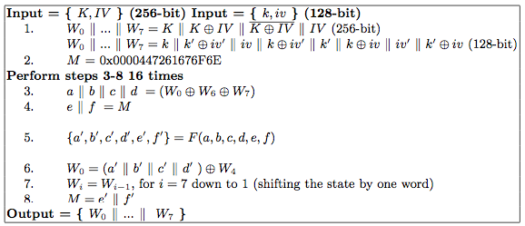
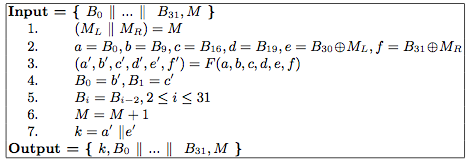
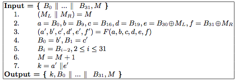

Dragon ist eine Strom-Chiffre, die an der Australischen Queensland University of Technology (QUT) entwickelt wurde. Dragon war ein Kandidat für das eSTREAM-Projekt. Die für die eSTREAM-Phase 3 ausgewählte Version ist Dragon-128. Dragon ist nicht patentiert.
Dragon wurde vom Institut für Informationssicherheit (ISI) an der QUT in Brisbane, Australien, entwickelt. Es handelt sich um eine Stromverschlüsselung, die auf einem Schieberegister mit nichtlinearer Rückkopplung und einer nichtlinearen Filterfunktion mit Speicher basiert. Dieser Zustand wird mit 128- oder 256-bit-langen Schlüssel-IV-Paaren initialisiert. Jeder Takt ("Runde") erzeugt 64 bit des Schlüsselstroms, wobei einfache Operationen mit 32-Bit-Wörtern verwendet werden. Runden können wiederholt ausgeführt werden, um einen unendlichen Strom pseudozufälliger Daten zu erzeugen.
Dragon operiert in zwei verschiedenen Phasen (Stufen). Die Initialisierungs-Phase nimmt das Schlüssel-Material (128- oder 256-bit lange Schlüssel und IV) und übersetzt es in einen vollständigen internen Zustand (1024 bit, plus 64 bit Speicher/Zähler). Die Schlüsselstromerzeugungs-Phase
erzeugt 64 bit des Schlüsselstroms pro Operationsrunde.
Beide Stufen verwenden die "Aktualisierungsfunktion" F, die aus drei "G"-Funktionen (G1, G2 und G3) und drei "H"-Funktionen (H1, H2 und H3) besteht. Jede der G- und H-Funktionen indiziert in zwei
ausgewählte 8x32-bit S-Boxen. Der sequentielle Betrieb von F ist im folgenden Bild dargestellt:
Die Initialisierungsphase wird beim ersten Schlüsselinput der Chiffre und bei jedem neuen Schlüsselinput ("Rekeying") durchgeführt. Aus Sicherheitsgründen wird empfohlen, den Schlüssel und den Rekey zu ersetzen und die Chiffre neu zu initialisieren, nachdem jeweils 2^64 bit Schlüsselstrom erzeugt wurden. Die Initialisierung besteht aus einer bestimmten Verkettung des Schlüssels und IV, um den anfänglichen 1024-bit-Zustand (sowie den 64-bit-Speicher/Zählerwert) zu erzeugen, gefolgt von 16 Iterationen der F-Funktion. Die vollständige Initialisierungsprozedur ist im folgenden Pseudocode zu sehen:
Nachdem die Chiffre initialisiert wurde, erzeugt die Schlüsselstrom-Generierung mit Hilfe des nichtlinear rückgekoppelten Schieberegisters (NLFSR) sowie dem Speicher-/Zählerwert 64 bit des Schlüsselstroms und einige "Feedback"-Informationen, die den Zustand des NLFSR verändern. Das 1024-bit NLFSR ist in zweiunddreißig 32-Bit-Wörter aufgeteilt, die mit B0 bis B31 bezeichnet werden. Dieser Schlüsselstrom-Generierungsprozess sieht wie folgt aus:
 

Die Dragon-Chiffre hat sich bisher nicht als unsicher erwiesen. Einige Angriffe, wie zum Beispiel ein "distinguishing"-Angriff, wurden aufgebracht und anschließend zurückgewiesen. Man kann also davon ausgehen, dass Dragon sicher genug ist, um sensible Daten zu schützen. Er ist sowohl hardware- als auch softwareseitig schnell: Ein 3,2-GHz Pentium-4-Prozessor kann 3,8 Gbps Schlüsselstrom berechnen, und eine Hardware-Implementierung mit einem Samsung-ASIC lieferte 23 Gbps Schlüsselstrom.
Das Entwurfspapier [1], das von mehreren Mitgliedern des ISI verfasst wurde, ist Grundlage für die in diesem Dokument verwendeten Ideen und Zahlen. Eine vollständige Umsetzung der Chiffre in C sowie weitere Informationen zu Dragon sind auf der Website eSTREAM Phase 3 zu finden. Die frühere ISI-Website unter http://www.isi.qut.edu.au/resources/dragon/ ist nicht mehr zugänglich. Neuere Veröffentlichungen finden sich in den Referenzen.